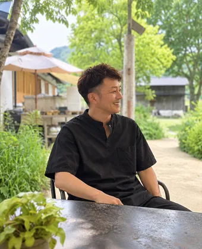

ゼロから作るより、
活きた店を継ぐ。
閉める前の店の内装と設備を引き継いで、あなたの店を始めませんか。
厨房も、シャンプー台も、診察室も。作り直さなければ、始めるお金は小さくなります。
内装・設備の工事費を比べると（業種を切り替えられます）
飲食店：内装・設備の工事費（20坪の例）
出典：マネーフォワード（飲食店の内装工事費）。造作の譲渡額・保証金・運転資金は別途。
美容室：内装の工事費（10坪の例）
出典：freee（美容室の開業資金）。造作の譲渡額・保証金・運転資金は別途。
クリニック・歯科：内装にかかるお金試験受付中
この金額は、内装・造作を譲り受ける価格です。開業費ではありません。医療機器、手直しの工事、保証金、運転資金は別にかかります。
出典：PHC（クリニックの内装工事費）、m-assets（歯科の開業資金）、バトンズ（東京・内科／大阪・美容クリニック）。医療機器は当社では売買しません。
いずれも公開されている相場・事例で、2026年10月時点で当社が確認したものです。地域・規模・設備の状態・改装の範囲・賃貸借の条件によって大きく変わり、保証するものではありません。
表に出る前の「閉める前の店」も、
地域のつながりからご紹介します。
融資の申込まで支援
（代表・商工会での20年）
ゼロから作る場合と、引き継ぐ場合
いちばん大きく変わるのは、内装工事と設備のお金です。同じ条件で比べられるよう、工事費どうしを並べました。
| 業種 | ゼロから作る場合 | 内装・設備を引き継ぐ場合 |
|---|---|---|
| 飲食店 | 内装・設備工事 約800〜1,400万円20坪をスケルトンから作る場合の相場。開業資金の総額は業態により約1,000〜4,000万円（ラーメン店 約1,000万円、カフェ 約1,500万円、居酒屋 2,000〜4,000万円） | 内装・設備工事 約400〜1,000万円20坪の居抜きを手直しする場合の相場。設備をほぼそのまま使える店なら、さらに下がります |
| 美容室 | 内装工事 約400〜700万円10坪をスケルトンから作る場合の相場。開業資金の総額は、ひとりで10坪なら約815万円、相場は1,000万円前後 | 内装工事 約350〜600万円10坪の居抜きを手直しする場合の相場。シャンプー台を引き継げれば1台30〜100万円の削減 |
| クリニック・歯科試験受付中 | 内装工事 約1,000〜3,500万円一般的なクリニック25坪で約1,000〜1,200万円、歯科は約1,500〜3,500万円。開業資金の総額は内科 5,000〜8,000万円、歯科 5,000万〜1億円（テナント開業・運転資金を含む） | 内装・造作の譲渡希望価格 約200〜300万円公開されている譲渡案件の例。開業費ではありません。医療機器・手直しの工事・保証金・運転資金は別にかかります。 |
いずれも一般に公開されている相場・事例で、2026年10月時点で当社が確認したものです。地域・規模・設備の状態によって大きく変わります。引き継ぐ場合も、造作の譲渡額、保証金、運転資金、設備の更新、許可の取り直しの費用はかかります。出典：飲食店ドットコム（業態別の開業資金）、マネーフォワード（飲食店の内装工事費）、創業手帳（美容室の開業資金）、freee（美容室の開業資金）、PHC（診療科別の開業資金）、PHC（クリニックの内装工事費）、m-assets（歯科の開業資金）、バトンズ（東京・内科／大阪・美容クリニック）。
BRIDGE CYCLEで探す理由
連携する管理会社や地域のつながりから、閉める前の店の情報が入ります。ポータルサイトに載る前の段階の案件もご紹介します。
国の認定支援機関として、この立地・この業態で成り立つかを確かめ、資金計画をつくり、融資の申込まで支えます。
店名は秘密保持の契約のあとにお伝えします。値段の申し入れは、退去の期限に間に合わせるため原則2回まで。当社が書面で取り次ぎます。
先に1日だけ売ってみることもできます。売り場レンタルで、お客さんの反応を確かめてから決められます。
登録から開業まで
- 今日無料で登録オンライン始めたいお店・時期・エリアを登録します。登録した方には、代表から一度ご連絡します。
- 紹介の前に承継事業化診断オンライン店主にご紹介する前に、開業資金と事業として成り立つかを一緒に確かめます。店主の秘密を守り、見学だけの方が増えないようにするためです。診断料3万円は、成約時の料金に全額充当します。
- 案件が出たら店名を伏せてご紹介オンラインエリア・広さ・設備・譲渡の希望額を、写真と資料でお送りします。
- 気になったら秘密保持の契約→店名と詳しい資料オンライン電子契約で結べます。そのあとに店名と詳しい資料をお伝えします。
- 本気なら現地を内覧対面店主の秘密を守るため、内覧は当社が日程を調整し、営業時間外に行います。直接お店に行くのは控えてください。
- 内覧のあと値段の申し入れと事業計画・融資オンライン値段の申し入れは原則2回まで。並行して、事業計画・資金計画をつくり、融資を申し込みます。
- 融資が決まったら契約と引き渡し対面賃貸借は大家さんとあなたが直接結びます。代金は店主へ直接お支払いいただき、鍵と設備は現地で受け取ります。
料金
登録・紹介は0円。成約時25%（最低12万円）
事業計画・資金計画・融資の申込・店主との交渉の取り次ぎ・契約と引き渡しの調整まで込み。
成約時の料金は、内装・設備の譲渡額の25%（最低12万円・税別）です。承継事業化診断の3万円は、成約時にこの料金へ充当します。
料金は開業資金の一部として資金計画に入れ、融資の申込額に含めることができます。お支払いは融資が実行されたあと（決済日から7日以内）です。
キャンセル料がかかるのは、契約後にご自身の都合で取り下げる場合だけです（上限3万円）。融資が通らなかった場合や、相手方・当社の都合の場合はかかりません。
| 内装・設備の譲渡額 | 当社の料金 | 開業時の合計 |
|---|---|---|
| 40万円 | 12万円（最低料金） | 52万円 |
| 100万円 | 25万円 | 125万円 |
| 200万円 | 50万円 | 250万円 |
| 300万円 | 75万円 | 375万円 |
対象は譲渡額300万円まで。金額は税別です。開業時の合計は、譲渡額と当社の料金の合計で、保証金・運転資金などは含みません。
継ぎ手として、無料で登録
登録のしかたは2つです。条件に合う店を紹介してほしい方も、継ぎたいと思っている店がすでにある方も、ここから登録できます。
- 営業の電話はしませんご連絡はメールかLINEです
- 資金や信用情報は、ここでは聞きません診断のときに、ご本人の同意のうえで確認します
- いつでも登録をやめられますメールかLINEで一言送るだけです
「継ぎたい店がある」と登録したとき
- 代表がオンラインでお話を伺い、承継事業化診断（3万円・成約時に充当）で開業資金と計画を確かめます
- 気になる店の店主に、匿名で承継希望を一度だけ伝えます。「売ってほしい」という営業ではなく、「将来、移転や引退を考えるときに、この店を引き継ぎたい方がいます」とだけお伝えします
- 店主のお返事は3つのどれか。今は考えていないなら、それで終わりです。今ではないが、将来ならなら、その日まで候補としてつながっておきます。少し話を聞きたいなら、オンラインで面談します
電話や、営業中のお店への訪問はしません。値段や事情を探ることもしません。登録は0円です。店主にお伝えする前に、承継事業化診断を受けていただきます。話が進んだら、ふだんの流れ（秘密を守る約束・見学）に合流します。会社や株式の売買は扱いません。
相談するのは、この人です

中村 裕二
元 商工会経営指導員（瀬田商工会・大津北商工会）
商工会の経営指導員として約20年、500以上の事業者の開業・承継・閉店に立ち会ってきました。「設備が高くて一歩が出ない」人と、「使える設備を壊して閉める」店を、店がまだ生きているうちに出会わせるのが、この仕事です。
- 不動産の仲介（賃貸借の契約は大家さんとあなたが直接結びます）
- 医療機器の売買（許可・届出のある業者が扱います）
- お金の預かり（代金はあなたから店主へ直接）
よくある質問
自己資金が少なくても登録できますか
できます。資金の額だけで決めることはありません。診断のときに、日本政策金融公庫などの創業融資を前提にした資金計画を一緒に考えます。
融資が通らなかったら、どうなりますか
契約は進めず、キャンセル料もかかりません。計画を見直して再挑戦するか、別の案件を探すかを一緒に考えます。
前のお店と違う業態で始めてもいいですか
相談できます。設備をどこまで使えるか、その立地で成り立つかを、承継事業化診断で確かめます。
美容室やクリニックの案件はありますか
いまご紹介できる案件は飲食店が中心です。美容室・クリニック・歯科は案件が出たときにご案内します。クリニック・歯科は滋賀・京都で試験的に受け付けています。
紹介された店を、自分で見に行ってもいいですか
控えてください。店主はお客さんや従業員に知られないように準備しています。内覧は当社が日程を調整し、営業時間外に行います。
店名や前のお店のお客さんも引き継げますか
引き継ぐのは内装と設備です。店名・メニュー・お客さまの名簿・カルテは、原則として引き継ぎません。
なぜ紹介の前に3万円の診断が必要なのですか
店主は、お客さんや従業員に知られないように閉める準備をしています。開業資金と事業の見通しを先に確かめた方だけにご紹介することで、店主の秘密を守り、話が途中で流れにくくなります。診断の結果は、そのまま事業計画と融資の申込に使います。診断料3万円は、成約時の料金に全額充当します。
対象の地域は
大津市と京都市の周辺部を中心にご紹介しています。